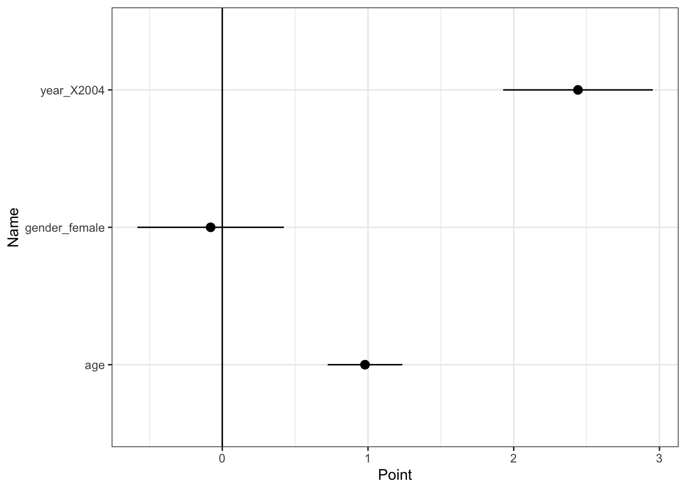

library(tidyverse)
library(recipes)
library(mlr3verse)
library(mlr3pipelines)
library(AER)
library(DoubleML)
data("CPSSW9204")
set.seed(123)
Y <- CPSSW9204$earnings
D <- if_else(CPSSW9204$degree == "bachelor",1,0)
X <- recipe(~ year + gender + age,
CPSSW9204) |>
step_normalize(all_numeric_predictors()) |>
step_dummy(all_nominal_predictors()) |>
prep() |>
bake(CPSSW9204,
composition = "matrix")
Data <- double_ml_data_from_matrix(X=X,
y=Y,
d=D)4 セミパラメトリック推定
- Chernozhukov et al. (2018) を実装する
4.1 パッケージ & データ
4.2 平均効果の推定
4.2.1 Super Learnerの定義
- LASSO, OLS, Random ForestからなるSuper Learnerを用いる
RegLASSO <- lrn("regr.cv_glmnet",
id = "RegressionLASSO"
)
RegOLS <- lrn("regr.lm",
id = "RegressionOLS"
)
RegRF <- lrn("regr.ranger",
id = "RegressionRandomForest"
)
ProbLASSO <- lrn("classif.cv_glmnet",
id = "ProbLASSO",
predict_type = "prob"
)
ProbOLS <- lrn("classif.log_reg",
id = "ProbLM",
predict_type = "prob"
)
ProbRF <- lrn("classif.ranger",
id = "ProbRanger",
predict_type = "prob"
)
RegLearners <- list(
RegOLS,
RegLASSO,
RegRF
)
ProbLearners <- list(
ProbOLS,
ProbLASSO,
ProbRF
)
RegSuperLearner <- lrn("regr.lm",
id = "RegressionSuperLearner")
ProbSuperLearner <- lrn("classif.log_reg",
id = "ProbSuperLearner")
RegNuisanceLearner <- pipeline_stacking(RegLearners, RegSuperLearner) |>
as_learner()
ProbNuisanceLearner <- pipeline_stacking(ProbLearners, ProbSuperLearner) |>
as_learner()4.2.2 Partial Linear Model
- 部分線形モデル (Robinson 1988)
lgr::get_logger("mlr3")$set_threshold("warn")
FitPLR = DoubleMLPLR$new(Data,
ml_l=RegNuisanceLearner,
ml_m=ProbNuisanceLearner)
FitPLR$fit()
print(FitPLR)================= DoubleMLPLR Object ==================
------------------ Data summary ------------------
Outcome variable: y
Treatment variable(s): d
Covariates: X1, X2, X3
Instrument(s):
No. Observations: 15588
------------------ Score & algorithm ------------------
Score function: partialling out
DML algorithm: dml2
------------------ Machine learner ------------------
ml_l: RegressionOLS.RegressionLASSO.RegressionRandomForest.nop.featureunion.RegressionSuperLearner
ml_m: ProbLM.ProbLASSO.ProbRanger.nop.featureunion.ProbSuperLearner
------------------ Resampling ------------------
No. folds: 5
No. repeated sample splits: 1
Apply cross-fitting: TRUE
------------------ Fit summary ------------------
Estimates and significance testing of the effect of target variables
Estimate. Std. Error t value Pr(>|t|)
d 5.6472 0.1142 49.44 <2e-16 ***
---
Signif. codes: 0 '***' 0.001 '**' 0.01 '*' 0.05 '.' 0.1 ' ' 14.2.3 AIPW
- AIPW (Robins and Rotnitzky 1995)
lgr::get_logger("mlr3")$set_threshold("warn")
FitAIPW = DoubleMLIRM$new(Data,
ml_g=RegNuisanceLearner,
ml_m=ProbNuisanceLearner)
FitAIPW$fit()
print(FitAIPW)================= DoubleMLIRM Object ==================
------------------ Data summary ------------------
Outcome variable: y
Treatment variable(s): d
Covariates: X1, X2, X3
Instrument(s):
No. Observations: 15588
------------------ Score & algorithm ------------------
Score function: ATE
DML algorithm: dml2
------------------ Machine learner ------------------
ml_g: RegressionOLS.RegressionLASSO.RegressionRandomForest.nop.featureunion.RegressionSuperLearner
ml_m: ProbLM.ProbLASSO.ProbRanger.nop.featureunion.ProbSuperLearner
------------------ Resampling ------------------
No. folds: 5
No. repeated sample splits: 1
Apply cross-fitting: TRUE
------------------ Fit summary ------------------
Estimates and significance testing of the effect of target variables
Estimate. Std. Error t value Pr(>|t|)
d 5.6285 0.1136 49.54 <2e-16 ***
---
Signif. codes: 0 '***' 0.001 '**' 0.01 '*' 0.05 '.' 0.1 ' ' 14.3 Best Linear Predictors
TempY <- FitAIPW$psi_b
TempData <- double_ml_data_from_matrix(
X = NULL,
y = TempY,
d = X
)
lgr::get_logger("mlr3")$set_threshold("warn")
FitBLP = DoubleMLPLR$new(TempData,
ml_l=lrn("regr.lm"),
ml_m=lrn("regr.lm"))
FitBLP$fit()
FitBLP$bootstrap()
as_tibble(FitBLP$confint(joint = TRUE)) |>
mutate(Name = colnames(X),
Point = FitBLP$coef) |>
ggplot(aes(y = Name,
x = Point,
xmin = `2.5 %`,
xmax = `97.5 %`)) +
geom_pointrange() +
geom_vline(xintercept = 0) +
theme_bw()